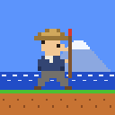

「歩け！忠敬」のサポートページです。 English
ご質問・不具合のご報告は、以下のメールアドレスまでお気軽にご連絡ください。数日以内にお返事いたします。
不具合のご報告時は、お使いの端末・iOS バージョン・どのあたり（地方や名所）で起きたかを書き添えていただけると助かります。
どうやって遊ぶのですか？
忠敬は自動で歩き続けます。海や段差、カモメや樽が来たら、画面をタップしてジャンプしてください。
体力（ハート）はどうなると減りますか？
役人・樽・カモメ・落石や段差の側面にぶつかったとき、クイズに間違えたときに1つ減ります。海や穴に落ちると全部なくなります。地方ごとの名物料理を取るか、クイズに正解するか、区を踏破すると1つ回復します。
体力がなくなったらどうなりますか？
最後に通った地点（茶屋の旗）から、体力満タンでやり直せます。
名所の写真が表示されません
写真はウィキペディアから読み込むため、インターネット接続が必要です。つながらないときは、ドット絵の風景が表示されます。
広告はいつ表示されますか？
海や穴に何回か落ちたあと、続ける前に全画面広告が表示されることがあります。
道筋や距離は史実どおりですか？
出立日（1800年6月11日、深川・富岡八幡宮）は史実です。道筋は伊能忠敬の10回の測量をつないだ架空の一周で、距離は海岸沿いの約80地点を直線で結んだものです。
アカウント登録は必要ですか？
いいえ。登録やログインなしでご利用いただけます。進み具合はお使いの端末内にのみ保存され、アプリを削除すると消えます。